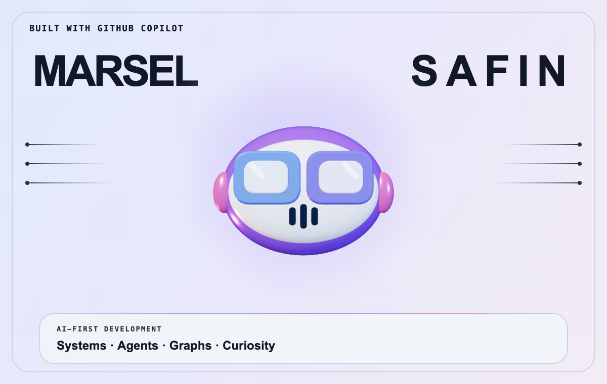
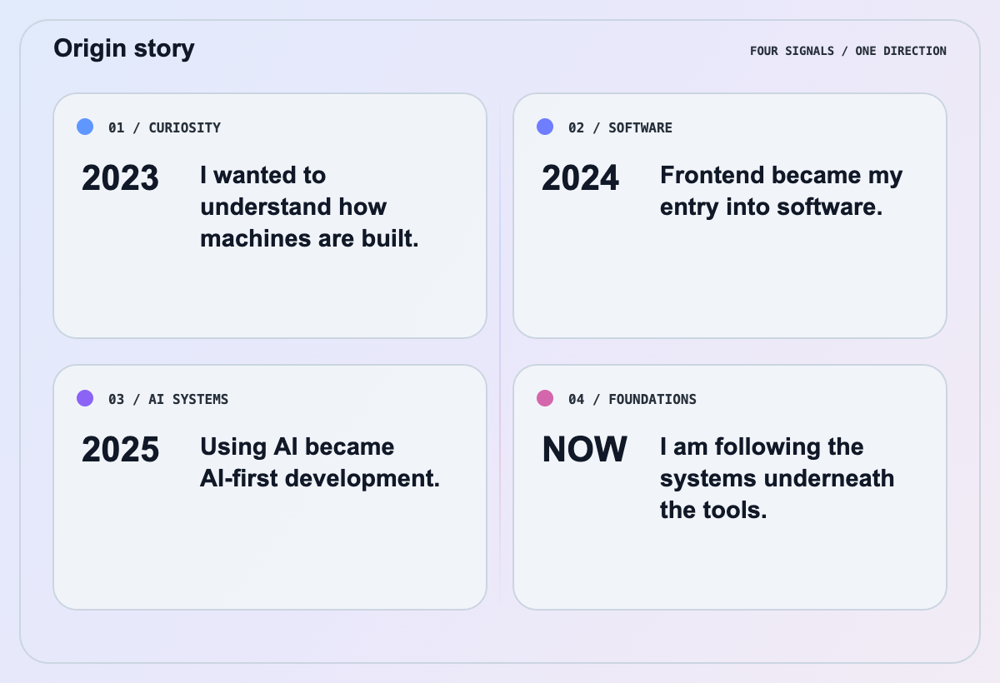

Marsel Safin — AI-first developer
PhD in breaking things apart until I understand how they work.
Curiosity brought me into technology. AI became how I build.
I keep pulling systems apart until I understand enough to build with them.
01 / ORIGIN
THE PATH

LATE 2023 / CURIOSITY
I wanted to understand how machines are built.
When ChatGPT 3.5 arrived, technology became something I could question, provoke, and take apart.
I learned by experimenting, pushing limits, breaking assumptions, and tracing what happened next.
That loop turned curiosity into a direction.
2024 / EDUCATION
Frontend became my entry into software.
I started a 400 YH-point Front End Developer program and gained a structured view of JavaScript, APIs, testing, UX, accessibility, agile work, and delivery.
2025 / AI-FIRST DEVELOPMENT
Using AI became AI-first development.
I moved from prompting tools to building systems through them.
My work expanded into agent orchestration, custom harnesses, AI memory, token optimization, and specialized AI-native SaaS products.
I also began running open-weight models in Google Colab with access to approximately 40 GB of VRAM and contributing to open-source projects.
NOW / GRAPHS / CONTEXT / ML
I am following the systems underneath the tools.
My current focus is graph engineering, context engineering, and machine-learning foundations.
02 / PROOF
Proof
Front End Developer
400 YH-poäng / EDUCATION / FOUNDATIONS
JavaScript and frameworks · API development · Software testing · UX and accessibility · Agile project work · 26 weeks of LIA · AI, tools, and sustainable code
How I build
FRAME / BUILD / REFINE
AI is not an add-on to my workflow. It is the environment I build through.
Problem definition · Product direction · Agent direction · Debugging · Model and tool selection · Deployment · UX
Contributor to github/spec-kit
OPEN SOURCE / PUBLIC PROOF
40+ commits
03 / CURRENT
Questions
Currently exploring
NEAR TERM / TECHNICAL DEPTH
Graph engineering · Context engineering · ML foundations
Long-term questions
LONG TERM / MEANINGFUL SYSTEMS
Robotics · Medicine · Biology — and what AI could contribute there.
04 / CONTACT